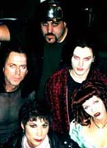

-
Bands from Friday, April 2nd @ Jimmy's Music Club:
-
New Dawn Fades New Dawn Fades is comprised of a unique blend of influences ranging from groups as diverse as The Pixies and Jane's Addiction to Bauhaus and The Damned. They have been playing the New Orleans area and the Gulf Coast since 1995, and had self-released their debut CD a short while before Convergence V.
Falling Janus Seraph Records' Falling Janus is a guitar based quartet out of New Orleans. In addition to conventional goth influences, their style is drawn from 60's art rock, the Manchester scene, and the dreampop/shoegazer movement with lyrical themes of obsession, violence, beauty, and pornography.
cut.rate.box cut.rate.box is the insect buzzing in your ear - unnerving but comforting - familiar yet disturbing. Combining a myriad of influences, c.r.b creates a distinct, infectious sound that can make you dance and make you think. They have opened for an impressive list of bands - including Alien Sex Fiend, Nine Inch Nails, and Covenant - and have recently attracted the attention of several record labels. Is their a signing in their future? Undoubtedly a band to watch. Cut.rate.box currently reside in New Orleans and released their fourth studio offering - the BlueIceBlack EP - right around Convergence V.
Ex-Voto New Orleans' own Gothic pioneers Ex-Voto have been a staple of the NOLA goth music scene for over a half dozen years now. Those of you from Los Angeles may already be familiar with the band, which originated there over ten years ago. For those not so familiar with Ex-Voto, a quick peek at their website will bring you up to date on the band's goings-on and various Cleopatra Records releases.

-
Bands from Saturday, April 3rd @ the House of Blues:
| The
Cruxshadows
The Crüxshadows is one of the strongest up-and-coming U.S. acts in the Gothic / Industrial scene today. They have sold over 5000 copies of their debut CD "Telemetry of a Fallen Angel" within the past year and have twice toured the NorthEast and MidWest with total success, their most recent shows playing to enthusiastic crowds of 600 - 1000 people. Convergence V was their second appearance in New Orleans. |
|
| Mentallo
& The Fixer
Formed in 1990 by two Texas brothers, Mentallo & The Fixer was definitely the most electronic based of the groups appearing at Convergence. Currently signed to Metropolis Records, Mentallo & The Fixer has been a prolific force in recent american industrial music with over half a dozen full-length releases to date, as well as several side projects. Initially known for anger filled, snarling distorted vocals, hard cutting sequencer rhythms, and thunderous beats, they have shown tremendous musical growth and artistic maturity in complex and emotional songs with often dark, Gothic overtones. Mentallo & The Fixer has recently released the full length CD Algorythum on Metropolis. Convergence was be their first appearance in New Orleans.
|
|
Clan of Xymox is one of the founding fathers of modern day Gothic / Industrial music. With well over 20 releases since the early 1980’s, this band remains at the forefront of the genre in the late ‘90s. They have performed with a large number of major acts such as Dead Can Dance, and most recently, in October of ‘98, Xymox co-headlined with the Cure at the Zillo Festival in Germany. Both legendary and awe inspiring, Xymox was the largest act to ever play Convergence. As a special treat, their latest CD - Creatures - was released the day of their performance at Convergence V, affording attendees the earliest chance to obtain a copy. |
|
The lovely & talented DJs of Convergence V:
| Count
Von Sexbat
Sexbat is a sort of myth. He was originally started as a franchise and the identity has been passed down the generations like Dread Pirate Roberts in a dress. The current incumbent will deny this of course. He has been known to pop up in various places all over the western world and play music at people including a residency at the Whitby Gothic Weekend festival, Afterhours, and the Bratcave. He likes airconditioning, yellow drugs, big dresses, and has been known to drink the occasional vodka. |
|
| Lady
Bathory
Lady Bathory is an unrepentant glittergoth from Boston, MA, w/a peculiar fondness for single-malt Scotch whisky & very large shoes. She is presently one-half of the production team that provides Boston with its only 18+ goth night, 'Ceremony', as well as DJing every Wednesday at New England's most notorious goth/fetish club, ManRay. Lady B's previous transgressions include a stint as touring keyboardist for Electric Hellfire Club, & resident DJ at GothPat's "Death Rattle" in Chicago. She was a featured DJ at Convergence 4 last year, & has guested at a number of other special events including both Danse Macabre festivals & Dancing Ferret's New Year's Dracula Ball. Lady Bathory is very proud to have won one of COP International's Female Industrial Gothic awards, which are given to women for extraordinary achievement in the advancement of gothic & industrial music. |
|
| Fross
About ten years ago, Fross started DJing in a little club in Rome, playing bad house and hip-hop. More recently, he's found playing at the Whitby Goth Weekend, the Bratcave and a variety of other London goth clubs, playing bad house and hip-hop. A few drinks and he'll be anybody's^H^H^H^H^H^H^H spinning some darkwave/ebm/industrial and modern goth, and trying to sneak darkambient in when no-one's looking. Oh, and he does web stuff.
|
|